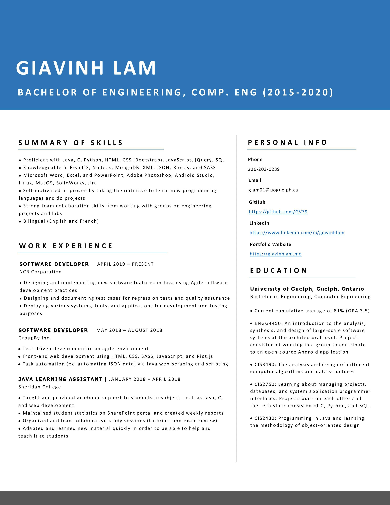

Who Am I?
Hi! My name is Giavinh Lam. I am currently working towards a Bachelor's in Computer Engineering at
the University of Guelph. This website was created from scratch using HTML, CSS, and Javascript to show off my
portfolio. For more information about my skills or other projects, please see my
Resume
or
GitHub.
My program and work experiences have given me a lot of exposure in using different technologies
and collaborating with others. As a result of these experiences and personal coding projects, I was able to
develop good coding practices and design, strong skills in problem solving, and strong knowledge in backend
technologies, frontend technologies, and tools standard in the software industry. I enjoy programming,
learning new things, and seeing all the different paths you can take in software development.
